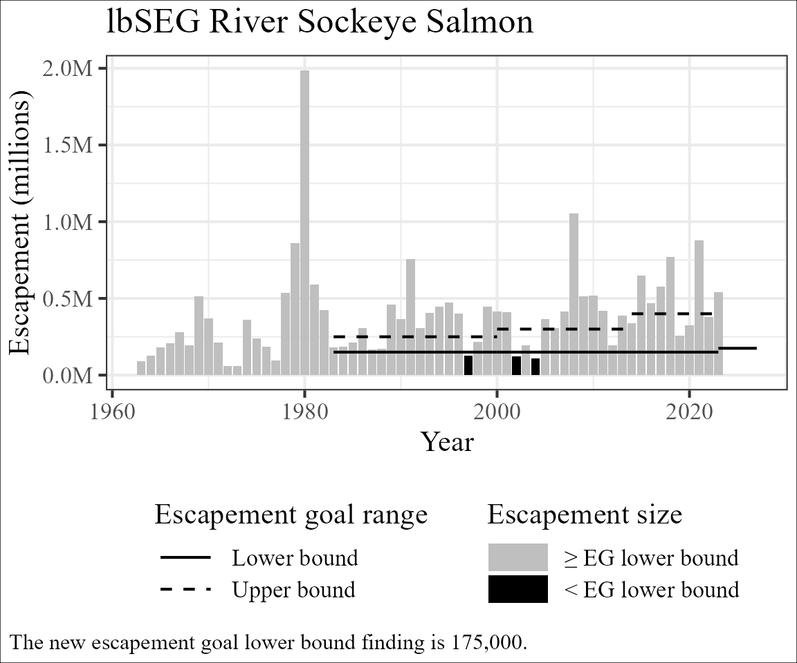
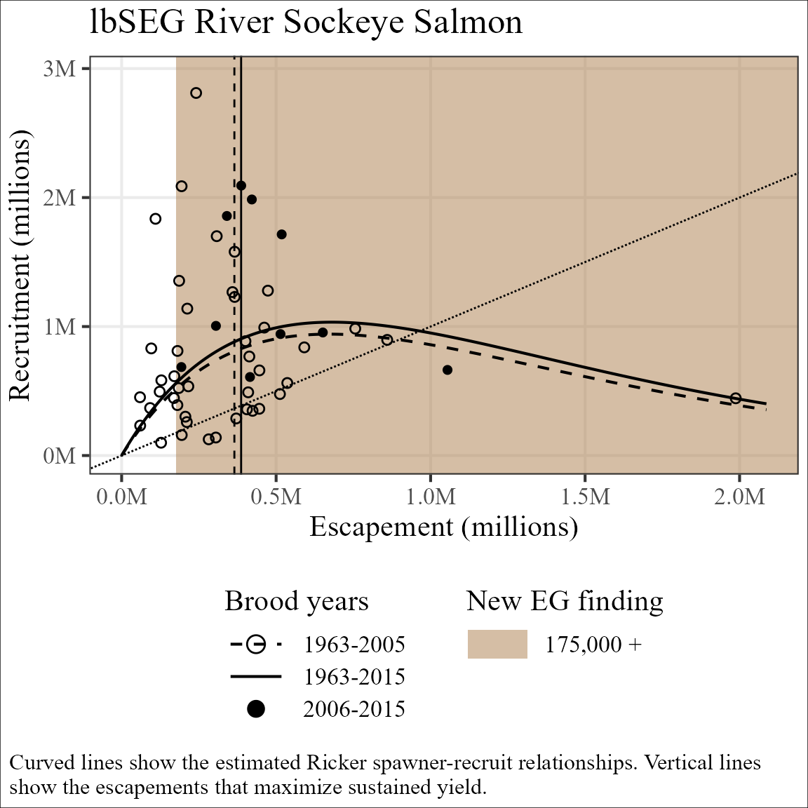
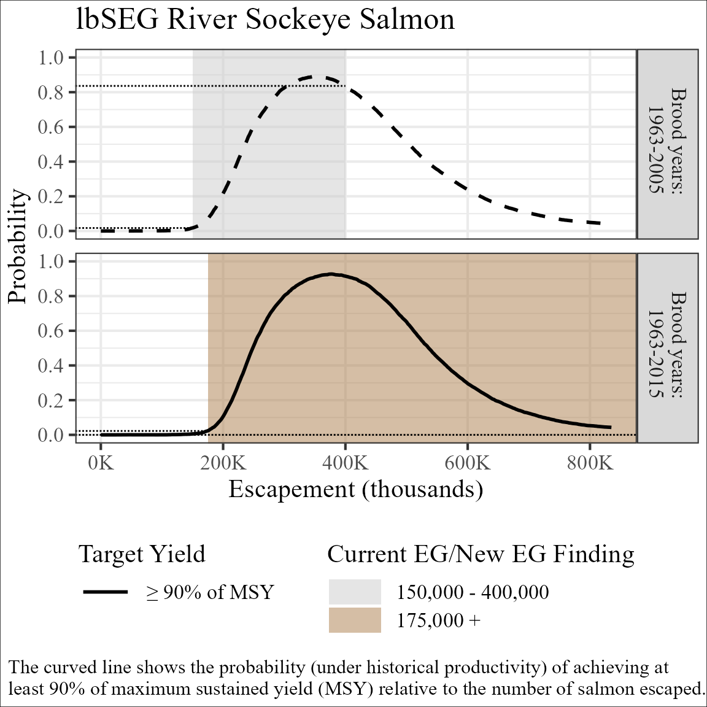

This vignette is the third in a series describing use of the
EGprocess package and covers special use cases which arise
during the escapement goal review process. New users may want to refer
to vignettes about package
structure or standard
usage before digesting the special use cases described here.
New Goal
For a brand new escapement goal there is no prior analysis to compare
to the updated analysis, the escapement goal finding is new and all of
the empirical data is being considered for the first time. EG process
can accommodate this use case by utilizing a single item list for
posterior_list and profile_list function
arguments, providing a single row dataframe to goal_data,
and specifying new_finding = TRUE.
Spawner-Recruit and Expected Yield Plots
Spawner-recruit and expected yield plots for the new goal situation uses a line type that indicates only the most recent analysis is presented, color coding that indicates the goal range represents a new finding and color coding that indicates all of the empirical data was new to this analysis.
brood_Igushik <- get_brood(run_data = data_Igushik)
goal_new <- data.frame(yr = 2026, lb = 175000, ub = 500000)
plot_SR(post_Igushik_byr63_15,
brood_Igushik,
goal_dat = goal_new,
"New River Sockeye Salmon",
new_finding = TRUE,
multiplier = 1e-5)
Optimal Yield Profile
Optimal yield plots for a new goal situation use a line type that indicates only the most recent analysis is presented and color coding that indicates the goal range represents a new finding.
profile_new <- get_profile(post_Igushik_byr63_15, multiplier = 1e-5)
plot_profile(profile_new,
goal_new,
"New River Sockeye Salmon",
new_finding = TRUE)
Incomplete Information
It is acknowledged that many users may not possess posterior distributions from the analysis responsible for the current escapement goal while completing the escapement goal update. There are several ways to deal with this situation, which vary based on the information staff do have available.
No Spawner-Recruit Information
In some situations a current escapement goal may exist but we lack any information about the original spawner-recruit analysis. One would hope this is a rare situation when the current escapement goal was based on a spawner-recruit analysis. This situation may also arise when the the current goal was based on another method (percentile, euphotic volume, etc.) but is now being supported by a spawner-recruit analysis. In this situation we know the brood years which have accumulated since the current escapement goal was adopted but have no information about the spawner-recruit relationship, expected yield, or the optimal yield profile from that time period.
Spawner-Recruit and Expected Yield Plots
In the situation where we don’t have any spawner-recruit information
to accompany the existing goal, spawner-recruit and expected yield plots
can only communicate information about the updated analysis and the
years added to the dataset since the last escapement goal change.
Therefore spawner-recruit and expected yield plots contain solid lines
to indicate only the updated analysis is shown and color coding to
identify the empirical data added to the analysis since the last
escapement goal change. This combination can be accomplished by
including a 2 item named list to posterior_list where the
first item is set to NULL and the second item is the
posterior for the updated analysis. This example illustrate how the
names in the list are used to identify the empirical data added to the
updated analysis. In this example we will pretend a new escapement goal
finding did not result from the updating the escapement goal
analysis.
posterior_missing <-
c(list('Brood years: 1963-2005' = NULL),
post_Igushik_byr63_15)
plot_ey(posterior_missing,
brood_Igushik,
goal_dat = goal_Igushik,
"Missing River Sockeye Salmon",
multiplier = 1e-5)
#> Warning: Removed 1 row containing missing values or values outside the scale range
#> (`geom_point()`).
#> Warning: Removed 2 rows containing missing values or values outside the scale range
#> (`geom_line()`).
Optimal Yield Profile
In the situation where we don’t have any spawner-recruit information to accompany the existing goal can only present OYP from the updated analysis and the resultant figure would contain a single OYP.
profile_missing <- get_profile(post_Igushik_byr63_15, multiplier = 1e-5)
plot_profile(profile_missing,
goal_Igushik,
"Missing River Sockeye Salmon")
Hindcast analysis
Recall that the escapement goal’s location on the OYP reflects the final decision from a complex process to determine how to best maximize yield in the context of various other concerns about the stock, data and fishery. Therefore, in the situation where we don’t have any spawner-recruit information to accompany the existing goal it may be helpful to rerun the spawner-recruit analysis on a subset of the updated dataset to approximate the information that would have been available had the spawner-recruit analysis been conducted at the time when the current escapement goal was adopted. This process can help quantify the performance (relative the maximizing sustained yield) of the existing goal at the time the goal was established and allow staff to quantify changes in the spawned-recruit relationship resulting from empirical data collected since that time.
The best decision regarding whether to rerun the analysis on subsetted data likely involved consideration of why we don’t have posterior data from the original analysis, how much the spawner-recruit relationship has changed since the original analysis, and how closely the hindcast and original analyses match for the information which is comparable. If this approach is utilized staff should be clear that the hindcasted analysis is being used to quantify temporal change sin our understanding of the spawner-recruit relationship and does not represent the information used to establish the current escapement goal.
Only Spawner-Recruit Parameters Available
In situations where a current escapement goal exists, and a parameter
table was published, but we do not have the posterior distribution from
the original spawner-recruit analysis EGprocess functions
allow users to produced spawner-recruit and expected yield plots that
include comparisons between the original and updated analyses based only
on parameter estimates.
Spawner-Recruit and Expected Yield Plots
In the situation where we only have parameter estimates to accompany
the existing goal, spawner-recruit and expected yield plots can
communicate all of the usual information by including the point
estimates for each parameter as the first item in the named list
provided to posterior_data. Notice the point estimate for
was multiplied by
to place it on the same scale as the shiny app posterior. In this
example, we will assume a new escapement goal finding was made.
post_onlyparameters <-
c(list('Brood years: 1963-2005' = c(lnalpha = 1.5, beta = 0.15, sigma = 0.5)),
post_Igushik_byr63_15)
goal_new <-
goal_Igushik %>%
bind_rows(
data.frame(yr = 2026,
lb = 175000,
ub = 500000)
)
plot_SR(post_onlyparameters,
brood_Igushik,
goal_dat = goal_new,
"Onlyparameters River Sockeye Salmon",
new_finding = TRUE,
multiplier = 1e-5)
#> Warning: Removed 1 row containing missing values or values outside the scale range
#> (`geom_point()`).
#> Warning: Removed 1 row containing missing values or values outside the scale range
#> (`geom_line()`).
Sub-optimal Yield Target
EGPIT decided escapement goals intended to target MSY should use a universal standard target yield of greater than 90% of MSY to evaluate and describe escapement goal bounds. A standard target of 90% of MSY makes sense for most salmon fisheries in Alaska. Arguably, Igushik River sockeye salmon is not one of them. The first issue is practical: because the lower bound of the escapement goal offers near 0% probability of achieving 90% of MSY, the standard target yield does a poor job of discriminating between potential changes to the lower bound of the escapement goal. Taken alone, that information might be functional because communicating the existing lower bound is already the minimum our standard target can describe is persuasive. However, Bristol Bay stakeholders have expressed a preference for sub-optimal yield because they prefer fisheries that open regularly, and because the fishery harvests can easily exceed processor capacity even with sub-optimal yield1. In situations like this, where staff and stakeholders can clearly describe a need or preference to target sub-optimal yield, profile plots can be modified to evaluate escapement goals relative to both optimal and sub-optimal yield.
This can be achieved by specifying the sub-optimal yield target using
the argument MSY_pct in the function
get_profile. The MSY_pct argument only accepts
2 sub-optimal yield targets, 70 or 80, representing sub-optimal yield
targets of greater than or equal to 70% or 80% of MSY, respectively.
post_Igushik <- c(post_Igushik_byr63_05, post_Igushik_byr63_15)
profile_Igushik_80 <-
get_profile(posterior_list = post_Igushik,
MSY_pct = 80,
multiplier = 1e-5)When a sub-optimal yield target is included in the profiles provided
to the profile_list argument of plot_profile
the sub-optimal target is plotted alongside EGPIT’s standard yield
target
(
90% of MSY) using a thinner line.
plot_profile(profile_list = profile_Igushik_80,
goal_dat = goal_Igushik,
title = "Igushik River Sockeye Salmon")
#> Warning: Removed 4 rows containing missing values or values outside the scale range
#> (`geom_segment()`).
Lower bound SEGs
EGprocess functions can handle lower bound SEGs if the
object supplied to the goal_dat argument of each function
lists NA for the upper bound. In this section we will assume us
EGprocess datasets to simulate a situation where the
escapement goal committee’s new finding resulted in an increase to the
lower bound of the current escapement goal alongside a conversion from
an SEG to a lower bound SEG.
goal_lbSEG <-
goal_Igushik %>%
bind_rows(
data.frame(yr = 2024,
lb = 175000,
ub = NA)
)The historical escapement plot reflects the change to a lower bound SEG by removing the upper bound line after the new finding’s effective date and by describing the new lower bound finding in the text reference below the graph.
plot_escapement(brood_Igushik,
goal_lbSEG,
"lbSEG River Sockeye Salmon"
)
#> Warning: Removed 1 row containing missing values or values outside the scale range
#> (`geom_segment()`).
Spawner-recruit, expected yield plots and optimal yield profiles reflect the change to a lower bound SEG by extending the color coding associated with the new finding to all escapements larger than the lower bound and by modifying the legend to specify there is no upper bound.
plot_SR(post_Igushik,
brood_Igushik,
goal_dat = goal_lbSEG,
"lbSEG River Sockeye Salmon",
new_finding = TRUE,
multiplier = 1e-5)
#> Warning: Removed 1 row containing missing values or values outside the scale range
#> (`geom_point()`).
#> Warning: Removed 1 row containing missing values or values outside the scale range
#> (`geom_line()`).
profile_Igushik <- get_profile(post_Igushik, multiplier = 1e-5)
plot_profile(profile_Igushik,
goal_lbSEG,
"lbSEG River Sockeye Salmon",
new_finding = TRUE
)
#> Warning: Removed 4 rows containing missing values or values outside the scale range
#> (`geom_segment()`).